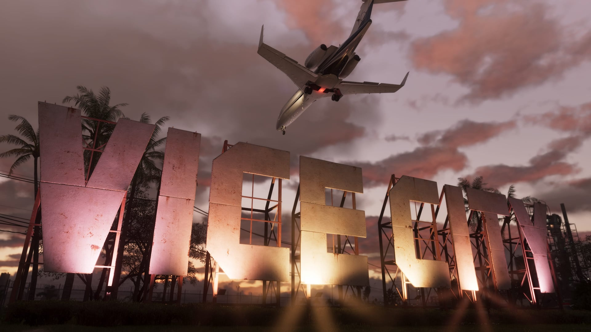

© Rockstar Games / Take-Two Interactive
Xbox Cloud Gaming et GTA 6 : ce qu'il faut savoir
EN BREF
- Rapport de The Verge (6 octobre) : exclusivité cloud pour Xbox, sources anonymes
- Démenti d'un responsable Xbox le 7 octobre : ni exclusivité, ni streaming vers PC
- Aucune version PC de GTA 6 n'est annoncée
- Plafonds d'heures de cloud annoncés pour Game Pass (à vérifier chez Microsoft)
Que s'est-il passé ?
Le 6 octobre 2026, The Verge a rapporté, sur la foi de sources anonymes, que Microsoft aurait obtenu l'exclusivité du streaming cloud de GTA VI au lancement. Le lendemain, un responsable de Xbox a répondu que le jeu ne serait ni diffusé en exclusivité ni en streaming vers PC.
Les conditions réelles de l'accord entre Microsoft, Rockstar et Take-Two n'ont pas été publiées.
Ce que ça change pour toi
- Sur Xbox : le jeu doit pouvoir être joué en cloud sur les consoles et dans l'application Xbox, d'après les propos rapportés.
- Sur PC : toujours aucune version annoncée, et pas de streaming PC confirmé au lancement.
- Sur PS5 : sans objet, le jeu se joue en local.
Les limites d'heures du cloud
D'après Tech Insider, Game Pass intégrera à partir de novembre un plafond mensuel de jeu en cloud : environ 15 heures pour l'offre Ultimate, 10 heures pour Premium et 5 heures pour Essential, avec une option de paiement à l'usage dont le prix n'est pas connu. Vérifie ces chiffres sur le site de Microsoft avant de t'y fier : nous n'avons pas pu les recouper.
Notre conseil
Pour une aventure de dizaines d'heures comme GTA 6, la version installée sur ta console reste la solution la plus simple : le cloud est un complément, pas un remplacement.